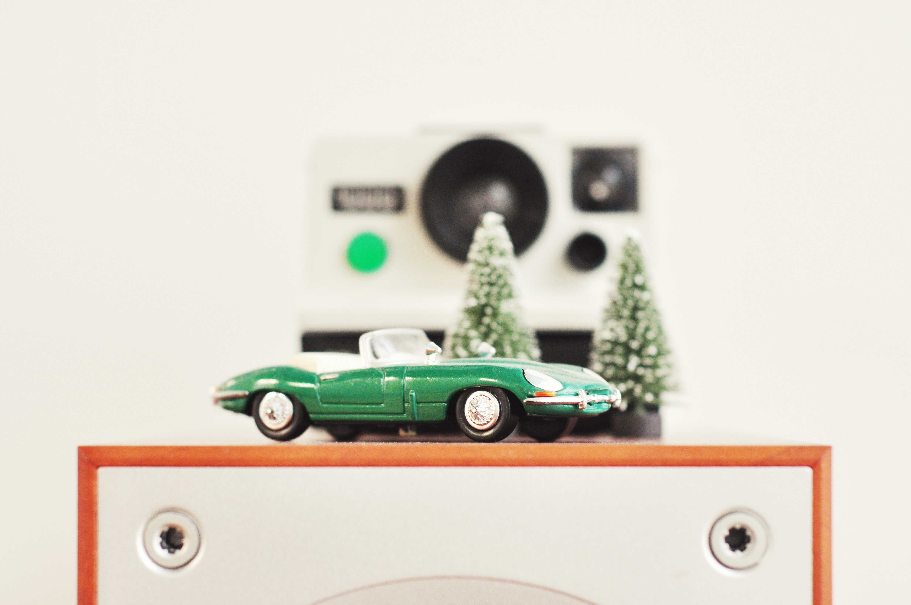

Techie gift guide 2016 - Part I
 It's that time of the year again! Warm jumpers, warm drinks, warm blankets... And Christmas. Even if you're not christian, chances are you're celebrating in some form. This post, and it's second part aims to help you find the perfect tech gift for the occasion.
For your mom
- Camry Food Scale Measuring Cup Kitchen Scale
Every kitchen needs a good scale. This one is also a measuring cup.
The two parts can be detached, so you don't get any liquid on the elecronic parts.

- NIX Advance Digital Photo Frame with Motion Sensor
Every mom loves displaying family photos right? Well, this digital frame allows her to put on a slideshow of your family's fun moments, including videos.

For your dad
- Logitech HD Pro Webcam
If you don't live at home anymore, you probably don't talk to your parents as much as you should.
So take this chance, and buy your father a webcam for christmas, and while you're at it, set it up too. Believe me, they going to appreciate, that they can see you more.

- Space Navigator Satellite Finding Binoculars
If your dad loves the outdoors, he's going to love these binoculars. They are especially for stargazing, and as you can see on the picture you can attach your smartphone to the top, and use the app SkyView to guide you to interesting stuff.

For the hipster
- Minipresso Portable Espresso Maker
There comes a point in most people life, where they just can't live without caffein anymore. If you are one of the few, who didn't fell for that trap, you go girl!
For the rest of us, coffee it is. For your favorite coffee-lover hipster here's an espresso maker, that they can take with themselves. Just imagine them brewing one in Starbucks!

- Konstruktor DIY SLR Camera
Everybody has that one friend, who's really into photography. They probably even have a facebook page, showcasing their art. If they are also into DIY they will surely love this camera, that combines the two!

For the fitness guru
- Xiaomi 1S Band
Nowadays everybody has a fitness tracker and with a good reason. But you don't have to break the bank to give one to your sporty loved one. This one from Xiaomi has every basic feature: heart rate monitoring, distance tracking, it also calculates burned calories.
And you only have to cough up 25 dollars!

- SIVA Atom
I'm not a big cyclist myself, but this gadget almost made me think about getting a bike.
It turns kinetic energy you generate while pedaling into power that you can then use to charge your phone or other device via USB.
The future is really here.

For the artist
- 3Doodler 3D Printing Pen
Let's be honest. Who doesn't want a 3D printing pen? I sure do, but it would probably just sit on a shelf somewhere collecting dust. So why not gift it to somebody who can actually make art?

- Sensu Artist Brush and Stylus
For a digital artist not many gadgets can be as useful as a good stylus. As an extra, this can be used as a brush too!